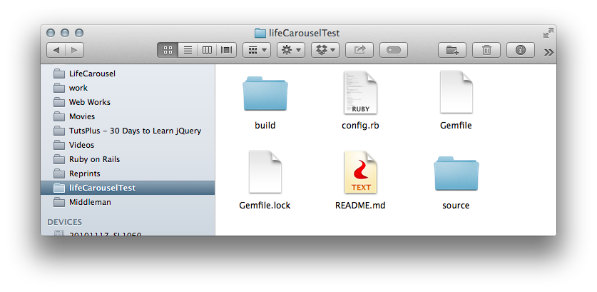
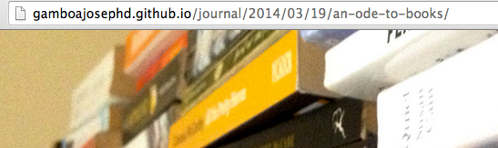
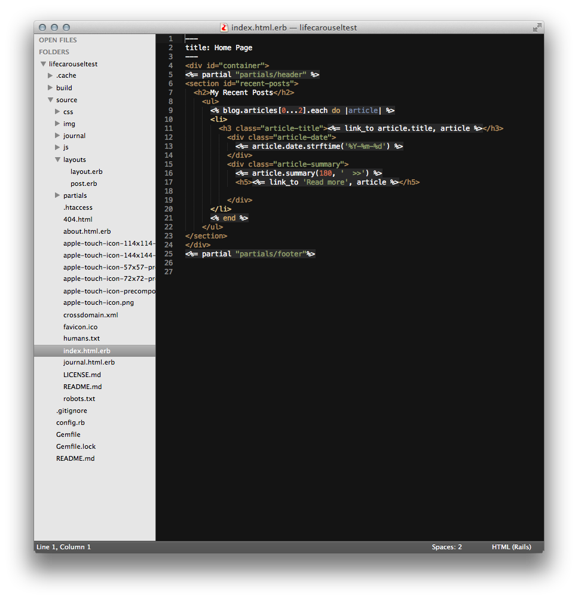
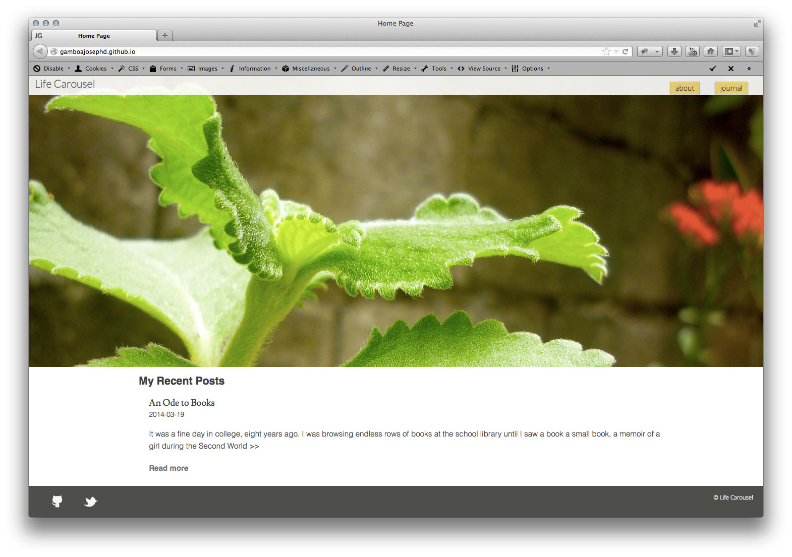

There’s a new version of Wordpress again with ever more options, great. It’s neat, a white, blank page for writing, new icons, whistles and bells, tons of new options. Having all these features can only be a good thing right? Right? Yet there will always come the time when you just get tired of clicking the upgrade button, especially when all you want to do is publish some content, some static content. Who would’ve thought that it’s now a possibility thanks to static page generators, and they’ve been here for quite a while now without me having known about them.
“And so the Middleman stood at the open platform in the middle of the anxious crowd proclaiming, Listen, for I have found the answers to your questions!”
-They were probably a Wordpress crowd
Having recently decided to get serious with Web development using Rails and it’s core language Ruby, I stumbled upon Middleman while scouring for Rails resources across the web, one of such static page generators that is based on Ruby itself. Being all excited about Rails, I thought I just had to give it a try, and oh how I enjoyed the process a lot.
And here’s my novice’s approach to how I got Middleman working on my end.
First, in order to get Middleman working you would need to have a working version of Ruby and RubyGems running on your system. If you are on a Mac, that would also mean you already have Xcode, or at least the Command Line Tools for Xcode already installed. If you haven’t already done so, I found this article by Daniel Kehoe of RailsApps to be extremely helpful. Ubuntu users can check his other post here. I’ve read that Rails or anything Ruby doesn’t really work well on Windows, so I won’t even try to go there.
When you are ready to install Middleman, open the Terminal and type in:
$ gem install middleman
And then you just wait until the gems finished installing.
Once done, you can start initialising new Middleman projects by typing the following:
$ middleman init project_name
Middleman also includes different templates that you can start working with such as HTML5 Boilerplate, SMACSS, and Mobile Boilerplate.
As I’ve preferred to start with HTML5 Boilerplate, I can pass the following on the terminal instead.
$ middleman init project_name —-template=html5
A typical project directory would have files and folders as shown below.

The “source” folder would be of special interest as it contains almost entirely all the files that we would be working with to deploy our static pages.
Adding additional gems to the Gemfile
Having originally planned to set up my site for blogging, and then subsequently deploy to Github pages, the following gems should be added to the gemfile.
gem “middleman-blog” #middleman blogging feature gem “middleman-syntax” #syntax highlighting gem “redcarpet” #markdown engine gem “nokogiri” #needed for adding article summaries, say article links on the homepage gem “middleman-disqus” #adds disqus commenting tool gem "middleman-deploy" #tool for deploying site to GitHub Pages.
After saving the Gemfile, you need to run bundler and wait a few moments to have have the new gems installed.
$ bundle install
Updating Site Configurations with config.rb
After installing the necessary gems needed for the blog-site, we can now start updating the needed configurations on the config.rb to access some gem functionalities.
activate :blog do |blog| blog.prefix = "journal" blog.permalink = ":year/:month/:day/:title.html" blog.tag_template = "tag.html" blog.paginate = true end
A blog prefix of your choice, along with the permalink setting and the following config, enables the creation of pretty URLs as shown on the succeeding image.
activate :directory_indexes

Markdown Settings
One positive appeal of Middleman is the ability to use a Markdown tool right straight from a text editor and be able to do editing straight from there, Sublime Text 2 on my system.
As I’ve read on other blogs, I’ve chosen to use Redcarpet, a better Markdown renderer, as opposed to Middleman’s default Markdown renderer.
You can add the following to the config.rb file.
activate :syntax set :markdown_engine, :redcarpet set :markdown, :fenced_code_blocks => true, :smartypants => true, :autolink => true, :strikethrough => true
A Markdown Cheatsheet can also be found on this link.
Making the actual Site Layout
After updating the config file, it’s now time to do the the main part to make it a functional blogging page.
The biggest challenge might be to figure out the look of your page, maybe a typical homepage with links to recent blog posts, and the usual common About, and the Blog page itself would do just fine for now.
Now would also be a good time to run the development server that ships with Middleman to get us going. On the terminal, you type in:
$ middleman server
or just
$ middleman
will do just fine. You can now access it through your Web browser at 127.0.0.1:4567, or the more known, localhost:4567.
Opening the project directory, we can start with the index.html.erb, as shown below.

Frontmatter
--- title: "Home Page" ---
Frontmatter, using the YAML format (leading and trailing - - -) as shown above allows us to add different variables to a page. Depending on a page’s requirements, a blog post page can have the following variables, title, tags, date, or even a blog page specific layout template.
Partials
Partials provide a convenient way to reuse site common parts such as the header and footer sections, saving us from code repetitions.
A code partial is shown below, using the ERB template.
<%= partial "partials/header" %>
Link Helpers
Middleman also provides some code snippets functionalities based on the Padrino Framework. As someone trying to learn Rails, this can only be a good thing, as they’re similar to Rails' View Helpers.
<%= link_to 'Read more', article %>
Showing a List of Recent Blog Posts
The following, a combination of basic html markup and helpers can be used to show a list of recent articles (two articles as shown along with the article’s title, date, and summary with 180 characters).
<ul> <% blog.articles[0...2].each do |article| %> <li> <h3 class="article-title"><%= link_to article.title, article %></h3> <div class="article-date"> <%= article.date.strftime('%Y-%m-%d') %> </div> <div class="article-summary"> <%= article.summary(180, ' >>') %> <h5><%= link_to 'Read more', article %></h5> </div> </li> <% end %> </ul>
Adding Additional Page Layouts
As I’ve chosen to have a different layout for my blog posts, I’ve added an additional post.erb file on the layout folder, along with the existing layout.erb file.
The following lists a basic form of the code.
<% wrap_layout :layout do %> <article> <%= yield %> #shows the actual content of each individual post. </article> <%= disqus %> #shows the disqus section, see disqus section below. <% end %>
Adding Additional Page Links (About, Blog)
Adding additional link pages such as the About and Blog page(called mine Journal), is pretty much straightforward, just add the files with .html.erb extensions to the source root folder.
The following shows a snippet of the content of my About Page,
--- title: About Me --- ... <%= partial "partials/footer"%>
Disqus Comments
As we’ve already added the disqus gem to the Gemfile, we can just enable it on the config.rb file using the following code.
activate :disqus do |d| d.shortname = "disqus-shortname" end
Additional options can be found here, such as excluding the disqus plugin in development stage.
Generating Blog Posts
Creating a new article for the blog can now be initiated by typing the following on the terminal,
$ middleman article "Title"
And then additional options can be used on the article page’s frontmatter itself, such as to use the custom “post” layout we’ve created.
--- layout: "post" title: Title date: 2014-03-21 09:48 UTC #automatically generated tags: #add your tags here ---
Sass CSS
It’s also worth mentioning that Middleman uses Sprockets, similar to Rails' Asset Pipeline, that magically streamlines CSS and JavaScript assets for production.
Although I’m also just beginning to familiarise myself with Sass, I’ve found its features such as variable assignments, nesting, and mixins to be extremely useful.
The following code snippet is one such example:
$gray-dark: #424242; $fontFamily: helvetica, serif; ... #site-logo a { color: lighten($gray-dark, 15%); font-family: $fontFamily; &:hover { opacity: 0.8; } }
Deploying to GitHub Pages
As originally planned, after finishing a working version of the site, we are now ready to deploy it to GitHub Pages. If you haven’t done setting up your Github page yet, you can do so now by checking this link.
Some settings need to be activated on the config.rb file to enable the Deploy gem.
activate :deploy do |deploy| deploy.method = :git deploy.build_before = true deploy.branch = "master" end
We can also push our work to GitHub at this point.
$ git add -A $ git commit -m "Initial commit to Middleman Page"
As shown on the code above, our static page will be pushed on the master branch, so we’d need to move our master branch' contents to another branch, calling it source, then pushing our commit there.
$ git branch source master $ git checkout source $ git push origin source
Finally, we can now deploy to Github pages with the following code,
$ middleman deploy
Woot! Congratulations on publishing your first Middleman static site! The middleman-deploy gem offers additional options, case you’d want to publish to traditional shared hosting through ftp. They can be found here.
Here’s an image of my homepage

Conclusions
I hope I was able to shed some light on my process of working with Middleman and publish my content to GitHub Pages, and managed to encourage you quite a bit to give it a try yourself, if you haven’t already done so, and when you do, you’d certainly be rewarded for your efforts.
With Middleman’s many similarities to Rails' functionalities because of the shared Ruby language, I feel like I am now more ready to dive in to Rails' complex world.
Further Readings
! Lots of other information can be found on Middleman’s Documentation Page itself, well-written and always useful.
! I found these blog posts to be also highly useful: here and here.
Please feel free to also check my actual Github Page repo to see the basic file structures, and copy codes when you need to. I realised that it’s actually really helpful to check other people’s implementation just to get the ground running. Finally, I suggest you keep on breaking stuff until you understand the concepts, until you like what you’ve accomplished, until you can be proud enough to show it the world. Have fun learning!
I know I’ve missed a lot more on this post, and would love to hear what you have to say on the comments below.